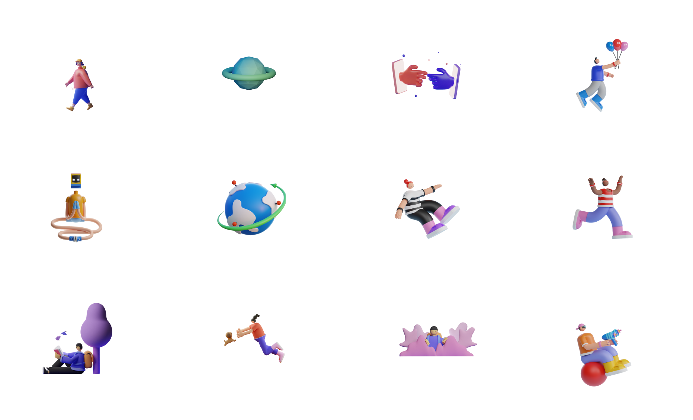
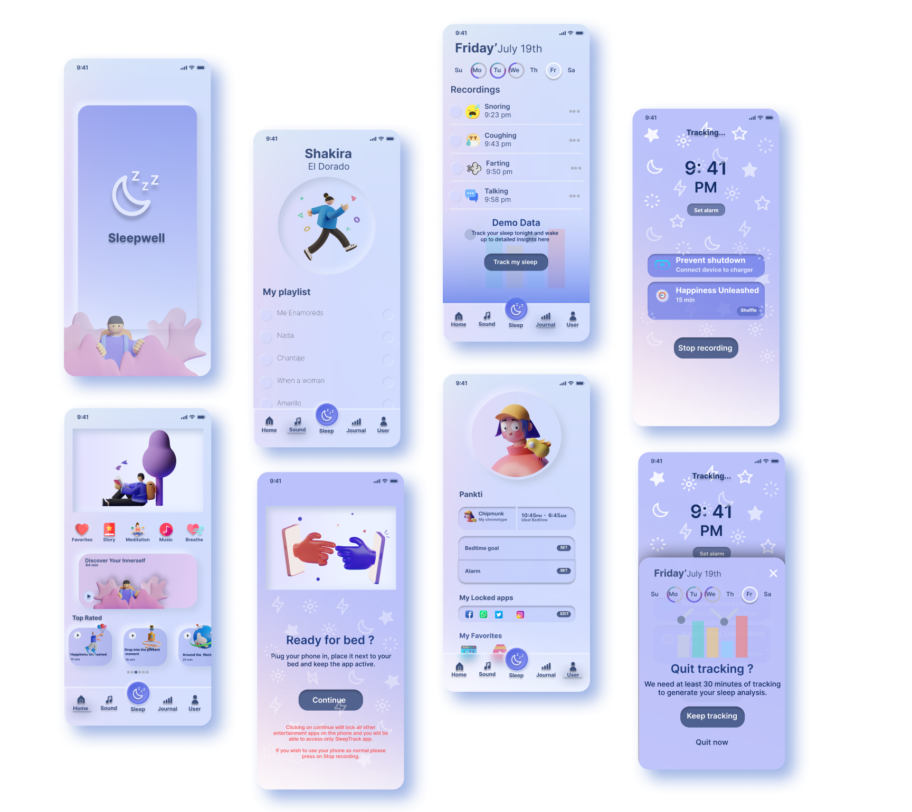
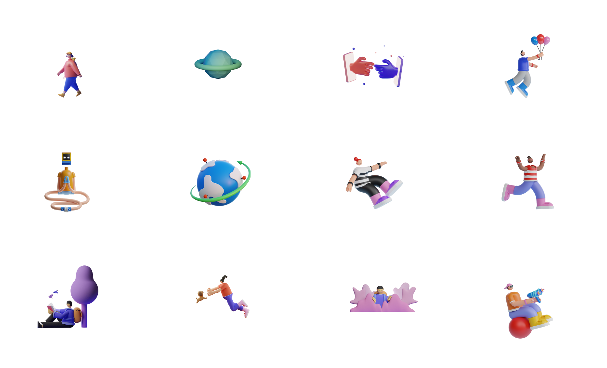
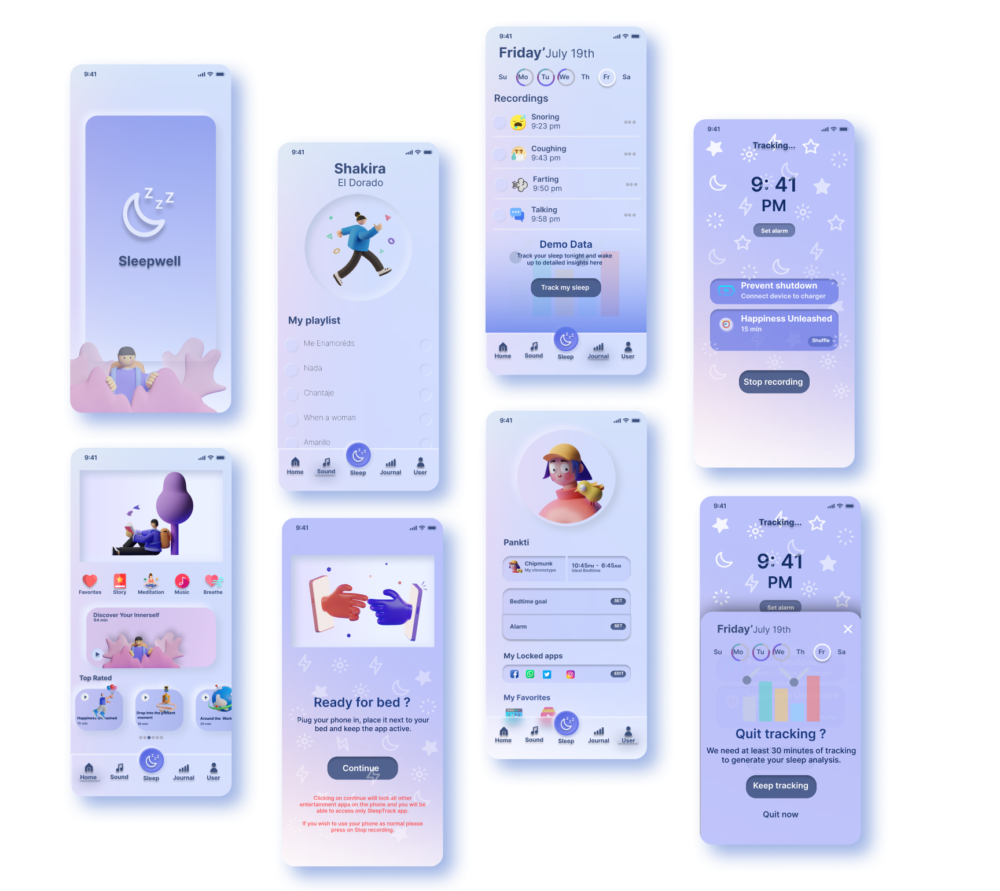

Sleepwell is an app created to help people sleep faster and better and reconnect them with their better-self through
dedicated sessions. This app aims to be a safe place for people to relax, rejeveunate and eventually make them fall asleep.
With the help of beautiful tunes and guided lessons, Sleepwell will help the users enhance their lifestyle.
Designed a meaningful visual narrative for Sleepwell - playful, bold and contemporary.
The design process started with research, experience planning, experience design and ended at execution and testing.
Challenges
We deal with problems like stress and anxiety on a daily basis. As times advance, the mental health gets worse leading to irregular sleeping patterns. Everyday people deal with a lot of distractions which leads towards insomnia and depression in turn disturbing their whole lifestyle. Thousands of people find themselves scrolling their phones for hours at night and are unable to sleep. People who are trying to fix these problems struggle to form healthy practices and a routine.
Solution
The goal is to create an app that helps people sleep faster and better through guided sessions and detailed report analysis curated specially for them. The app will focus on user’s problems and suggest best practices accordingly. It will promote forming habits of healthy practices by guiding users on their journey.
Design Process
Research
User Research focuses on user behaviors, needs and motivations through observation technique, task analysis and feedback.
To understand the users better, qualitative survey and interviews were conducted.
18 people were interviewed to understand the difficulties they face before they plan to sleep and how they try to resolve it.
Few of the questions we were finding answers to were :
Insights
After understanding their actions, feelings, pain points and desired outcomes we came up with insights on what users desired and had trouble with.
1. On an average, people spend around 0.5-2 hrs everyday trying to sleep
2. Most people go to sleep between 11 pm to 1 am.
3. 30% of the users had tried an app for assistance before.
4. Most users used their phones when were were unable to sleep and scrolled through social media apps.
5. All the users used their phone for 0.5 hrs before sleep.
6. People took longer to sleep when hey changed their location
Based on the above insights, I understood the problems faced by users and have tried to solve the problems faced by them and give them a better experience.
User Personas
I created two different personas based on the target user group and all the information gathered by the research. I was able to create fictional characters who represent the target user group of the app.

Empathy Maps
Empathy mapping enables us to get a deeper understanding of our user’s behaviors and decisions. It is a collaborative visualization of we already know about a particular type of user.

Ideation & Brainstorming
Based on the understanding of user personas, I came up with some of the characteristics and features I desired the app to possess.
Wireframes
Based on the user feedback and personal insights, I began to design high fidelity wireframes using Figma. Guidelines from google’s material design, human interface design and accessibility guidelines were followed.
Visual Design
As we finalized the wireframes and workflows for the core features, we started working on the visual side of the project. The illustrations and colors were kept playful and pastel to give a calming effect.
 



Testing
I used the prototype to conduct a test with four users from our target demographic. I was happy to learn that participants loved the design and were able to complete most of the tasks. The feedback I received on the design was to increase contrast between some components which I immediately rectified. The users found the app to be clutter free and soothing.
Learning
In this project, I had experimented a lot colors and shadows. It was difficult to strike a perfect balance between aesthetics and functionality. I learnt a lot of tools (figma, illustrator, miro, notion etc) and important design concepts about accessibility.
I also learnt a lot about user behavior, interview processes and task management which helped me design great features.
In the end, I believe this is an ongoing process, and I plan to explore further ways to improve my designs.